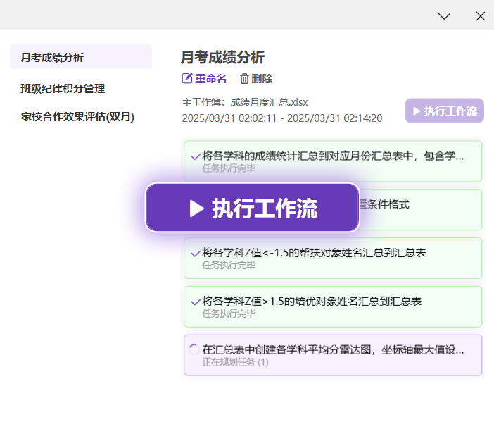

简单直接
只需几个简单步骤，即可开始使用ExcelFlow提高您的Excel工作效率
化繁为简
通过对话即可完成Excel操作，无需记忆繁杂的公式和按钮
接入AI大模型API
在开始之前，请完成API的设置，这是与AI大模型建立连接的必要步骤
推荐您使用DeepSeek-V3模型，您可以到官方API开发平台注册并申请API Key。
或者使用SiliconFlow提供的AI服务，并选择DeepSeek-V3模型。现在扫码或访问
https://cloud.siliconflow.cn
官方网站注册账号，即可免费获得2000万token，大约相当于20部《西游记》文本的处理量。
您也可以使用OpenAI的gpt-4模型，请注意要使用其Chat API URL来设置：
https://api.openai.com/v1/chat/completions
对话
您可以通过对话窗口提出Excel操作需求，ExcelFlow会自动对任务进行拆解，并为您生成详细的执行方案。
为了让AI大模型更好地理解您的需求，建议您为Excel文件和其中的每个Sheet进行合理命名，并在每个Sheet的首行设置合适的表头。
在ExcelFlow执行任务后，需要您对执行结果进行审核。如果您接受执行结果，还可以将任务保存至工作流知识库中。


工作流
您可以在新的Excel文件中，选择单步执行一个任务或一键执行整个工作流。
如果您有周期性的重复任务，比如需要周度、月度整理类似结构的数据，您可以使用前期创建的工作流。这将有效节省您的时间和精力。
您还可以管理工作流及工作流内的各项任务。